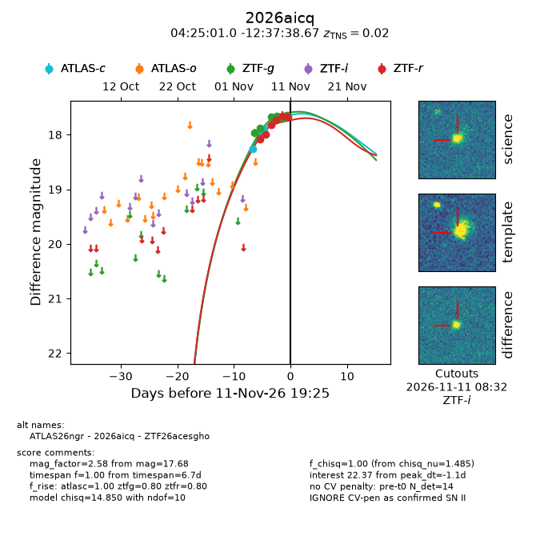
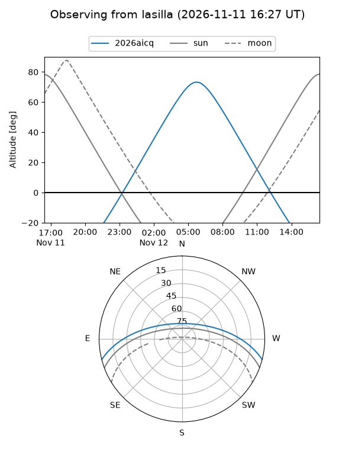
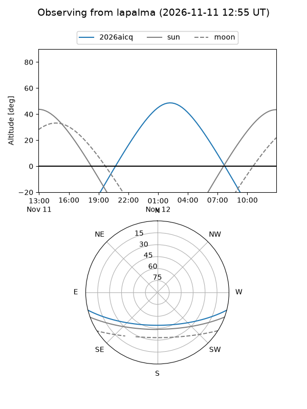
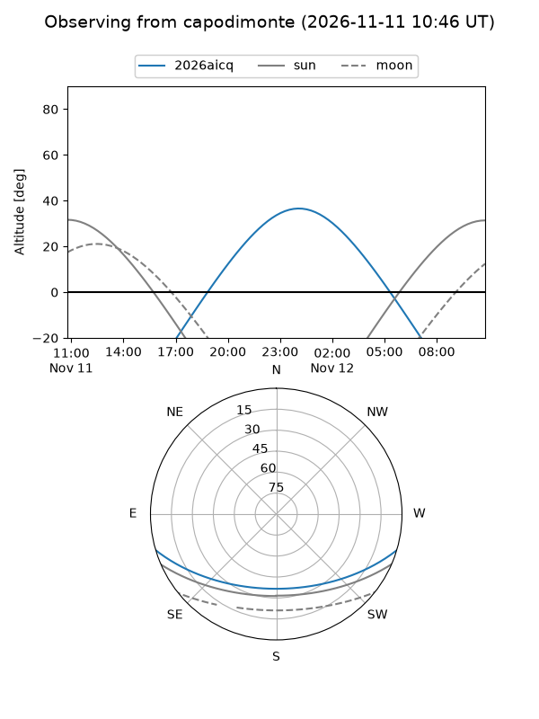

2026aicq
Target 2026aicq at 2026-11-11 19:27
Aliases and brokers:
FINK-ZTF: ztf.fink-portal.org/ZTF26acesgho
Lasair-ZTF: lasair-ztf.lsst.ac.uk/objects/ZTF26acesgho
ALeRCE-ZTF: alerce.online/object/ZTF26acesgho
YSE-PZ: ziggy.ucolick.org/yse/transient_detail/2026aicq
TNS name: wis-tns.org/object/2026aicq
Direct TNS query: direct search
alt names
ZTF26acesgho (ztf,fink_ztf)
2026aicq (tns,yse)
ATLAS26ngr (atlas)
Coordinates:
equatorial (ra, dec) = 66.2543,-12.62741
equatorial (HMS+DMS) = 04:25:01.03,-12:37:38.67
galactic (l, b) = (207.7700,-38.13700)
Flags:
TNS type: SN II
TNS redshift: 0.0200
peak dt: -1.1
Photometry:
last atlasc=17.90, ztfg=17.64, ztfr=17.68
2 atlasc, 6 ztfg, 6 ztfr detections
Lightcurve

Visibility



Additional plots